library(ggplot2)Introducción a gráficos con ggplot2
Otra lógica de programación
El paquete ggplot2 ofrece una nutrida biblioteca de funciones para la creación de gráficos de diversos tipos en R. La diversidad de gráficos y formas de personalización es enorme -es un curso en sí mismo- y aquí simplemente desarrollaremos los fundamentos básicos para su comprensión. Existen varias páginas web útiles para aprender sobre el desarrollo de gráficos con ggplot2, incluyendo a The R Graph Gallery y R Charts. En esta página se muestra una tabla de colores junto con su nombre a utilizar dentro del entorno R.
A diferencia de otros paquetes de graficación, incluyendo a las funciones nativas de R que ya hemos visto, la creación de gráficos con ggplot2 sigue una lógica diferente. Se trabaja mediante la apilación de “capas gráficas” a través de un lenguaje propio del paquete. Si tradujéramos el código en palabras, sería algo así:
creo espacio de graficación →
añado capa gráfica nº1 (e.g. puntos) →
añado capa gráfica nº2 (e.g. líneas) →
configuro eje x →
configuro eje y →
configuro parámetros generales del gráfico
Mejor que explicarlo, es mostrarlo!
Antes que nada, es necesario cargar el paquete al entorno de R:
Funciones de tipo geom
Para crear un nuevo gráfico, por ejemplo un simple gráfico de puntos, lo hacemos con el siguiente bloque de código:
ggplot(data = iris, mapping = aes(x = Sepal.Length, y = Petal.Length)) +
geom_point()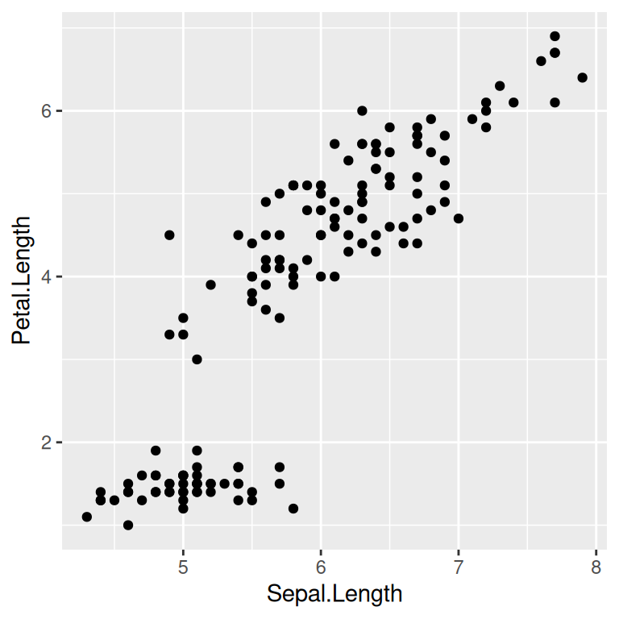
La primera línea llama a la función ggplot(). Esta función será el inicio de todos nuestros gráficos con ggplot2. Allí, indicamos el conjunto de datos que se utilizará para obtener los datos de graficación, típicamente un data.frame, en el argumento llamado data. El argumento mapping debe definirse a través de la función aes(), dentro de la cual definimos las variables a graficar y su asociación a las columnas del data.frame indicado. Aquí indicamos que la variable x será “Sepal.Length” y la variable y “Petal.Length”. Ambas son columnas del dataset iris indicado en el argumento data.
Seguidamente a la primera línea observamos un +, y esta es la gran diferencia de la lógica de ggplot2 respecto de otros paquetes. El operador + indica que seguido a él se añadirá una nueva capa al gráfico. Aquí, en la segunda línea (y está en la segunda línea por simple prolijidad, pero podría ir seguido en la primera línea), la función geom_point() indica que se añadirá un gráfico de nube de puntos (o scatterplot). En general, todas las funciones que comienzan congeom_ refieren a tipos de gráficos particulares, entre ellas:
geom_point(): puntos.geom_line(): líneas.geom_bar()ygeom_col(): barras.geom_boxplot(): cajas (boxplots),
Para probar: Escriba en la consola geom_, y espera a observar las sugerencias de funciones disponibles para la generación de distintos tipos de gráficos en ggplot2.
El grado de personalización de los gráficos con ggplot2 es inmenso. Por ejemplo, podemos cambiar el color, tamaño, forma y transparencia:
ggplot(data = iris, mapping = aes(x = Sepal.Length, y = Petal.Length)) +
geom_point(color = "forestgreen", size = 3, shape = 18, alpha = 0.7)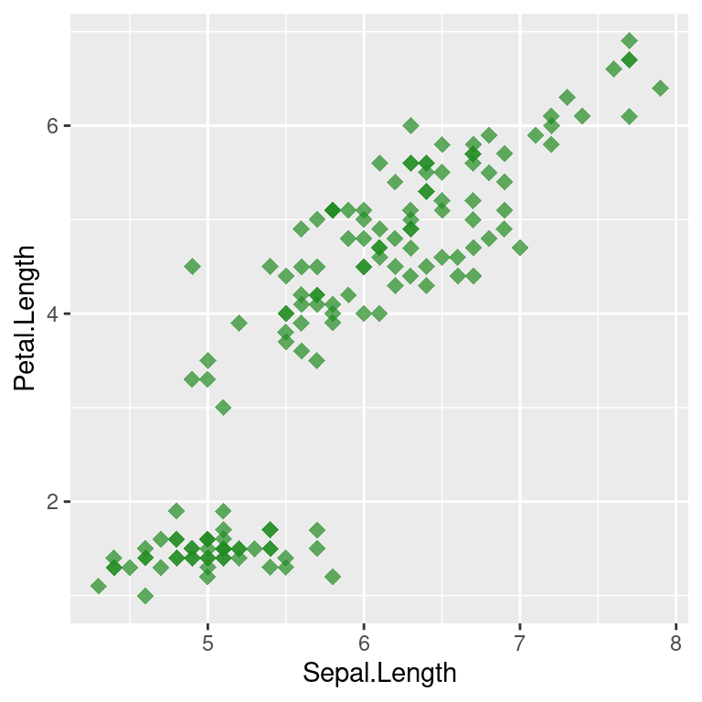
Si comparamos los argumentos utilizados en ggplot2 con los de los gráficos base de R, size es equivalente a cex, col vale para ambos enfoques, fill es equivalente a bg y shape es equivalente a pch.
El operador + permite agregar nuevas capas de información y personalización:
ggplot(data = iris, mapping = aes(x = Sepal.Length, y = Petal.Length)) +
geom_point(color = "forestgreen", size = 3, shape = 18, alpha = 0.7) +
geom_hline(yintercept = mean(iris$Petal.Length), lty = "dashed") +
ggtitle("Scatterplot de ejemplo")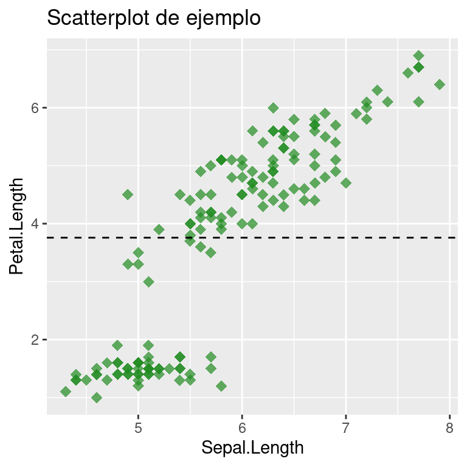
La función geom_hline() agrega una línea horizontal: el argumento yintercept indica el valor para y por donde pasará la línea, aquí indicado por el valor promedio de la variable y; el argumento lty permite elegir un estilo para la línea. La función ggtitle() añade un título.
Funciones de tipo scale
Las funciones del tipo scale_ son muy importantes, ya que permiten personalizar aspectos relacionados a las variables indicadas dentro de la función aes(). Aquí, con scale_x_continuous() indicamos un nombre para el eje x en el argumento name, los límites numéricos del eje con el argumento limits (vector de dos elementos, con valor mínimo y máximo) y los cortes del eje con el argumento breaks (vector numérico indicando dónde se ubicaran los cortes).
ggplot(data = iris, mapping = aes(x = Sepal.Length, y = Petal.Length)) +
geom_point(color = "forestgreen", size = 3, alpha = 0.5) +
ggtitle("Scatterplot de ejemplo") +
scale_x_continuous(name = "Longitud del sépalo", limits = c(5, 7), breaks = seq(5, 7, 0.5)) +
scale_y_continuous(name = "Longitud del pétalo")Warning: Removed 34 rows containing missing values or values outside the scale range
(`geom_point()`).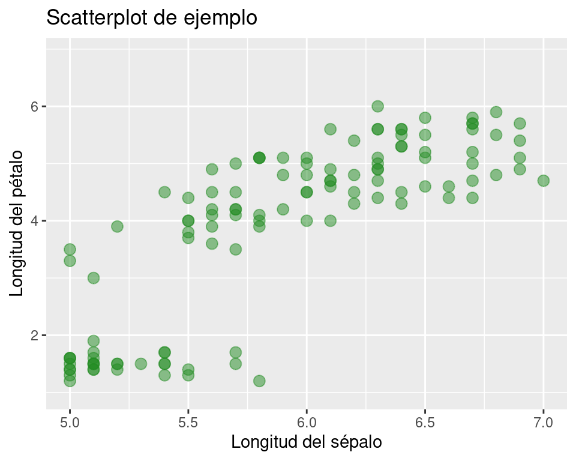
Notar la advertencia generada. ¿Qué significa?
Ahora bien, el gráfico que venimos haciendo incluye a las variables florales de las tres especies de Iris provistas dentro del conjunto de datos. ¿Cómo hacemos para diferenciarlas en el gráfico? Debemos indicar una nueva variable dentro de aes(), asociada a un parámetro gráfico apropiado. En este contexto, lo mejor sería que los puntos tengan diferentes colores por especie:
ggplot(data = iris, mapping = aes(x = Sepal.Length, y = Petal.Length, color = Species)) +
geom_point(size = 3, alpha = 0.5) +
ggtitle("Scatterplot de ejemplo") +
scale_x_continuous(name = "Longitud del sépalo") +
scale_y_continuous(name = "Longitud del pétalo")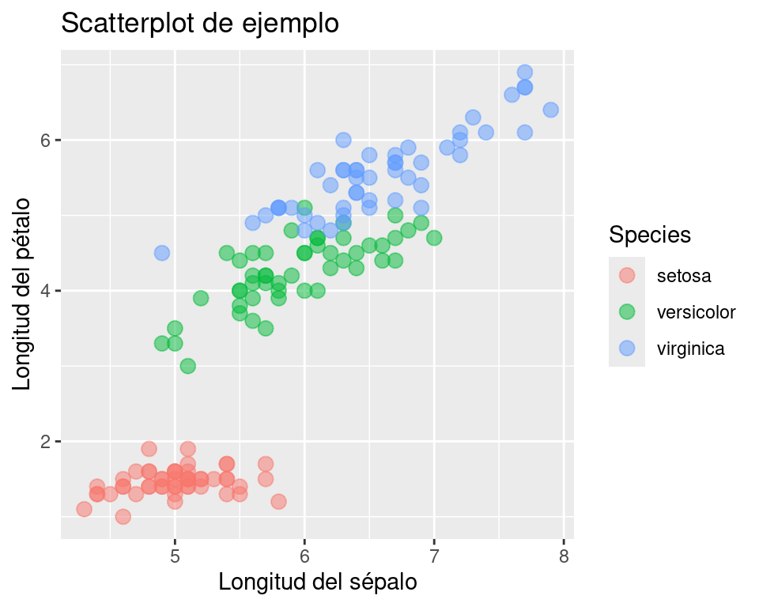
Notar el agregado de la variable color asignada a la columna “Species” de nuestra tabla, así también como la no definición de un color fijo dentro de la función geom_point() (porque la idea es que haya un color distinto para cada especie). Aquí, bien podríamos haber definido otro parámetro gráfico a modificar según las distintas especies, tales como la forma (shape) o el tamaño (size). Volviendo a nuestro código anterior, ¿cómo definimos colores específicos para cada nivel? La función scale_color_manual() es la indicada:
ggplot(data = iris, mapping = aes(x = Sepal.Length, y = Petal.Length, color = Species)) +
geom_point(size = 3, alpha = 0.5) +
ggtitle("Scatterplot de ejemplo") +
scale_x_continuous(name = "Longitud del sépalo") +
scale_y_continuous(name = "Longitud del pétalo") +
scale_color_manual(name = "Especie",
labels = c("I. setosa", "I. versicolor", "I. virginica"),
values = c("forestgreen", "firebrick", "blue3"))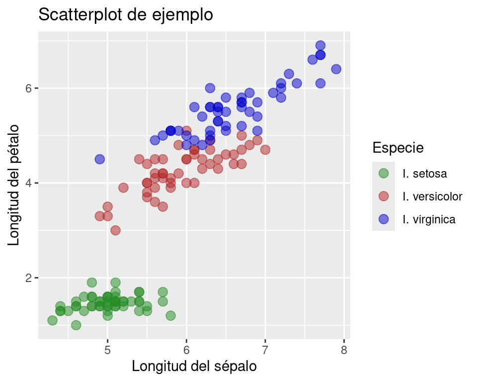
Los colores se encuentran definidos en el argumento values. Los argumentos name y labels permiten modificar el nombre asignado para la leyenda, y las etiquetas para cada especie.
Por otro lado, la función geom_smooth() añade líneas o curvas de tendencia para los datos. Aquí, el argumento method = "lm" indica que la línea a aproximar en la nube de puntos se calculará mediante una regresión lineal (“linear model”):
ggplot(data = iris, mapping = aes(x = Sepal.Length, y = Petal.Length, color = Species)) +
geom_point(size = 3, alpha = 0.5) +
geom_smooth(method = "lm") +
ggtitle("Scatterplot de ejemplo") +
scale_x_continuous(name = "Longitud del sépalo") +
scale_y_continuous(name = "Longitud del pétalo") +
scale_color_manual(name = "Especie",
labels = c("I. setosa", "I. versicolor", "I. virginica"),
values = c("forestgreen", "firebrick", "blue3"))`geom_smooth()` using formula = 'y ~ x'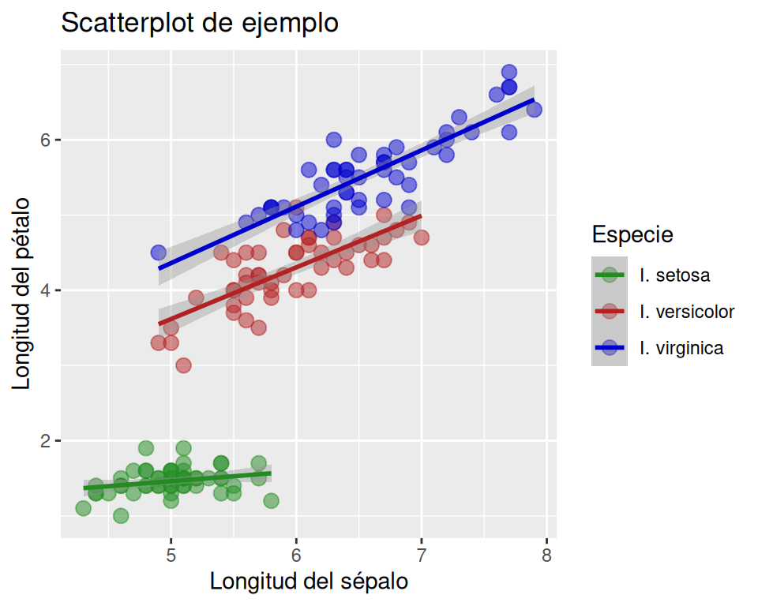
Boxplot
Veamos ahora un gráfico de cajas, con la función geom_boxplot():
ggplot(data = iris, mapping = aes(x = Species, y = Petal.Length, fill = Species)) +
geom_boxplot()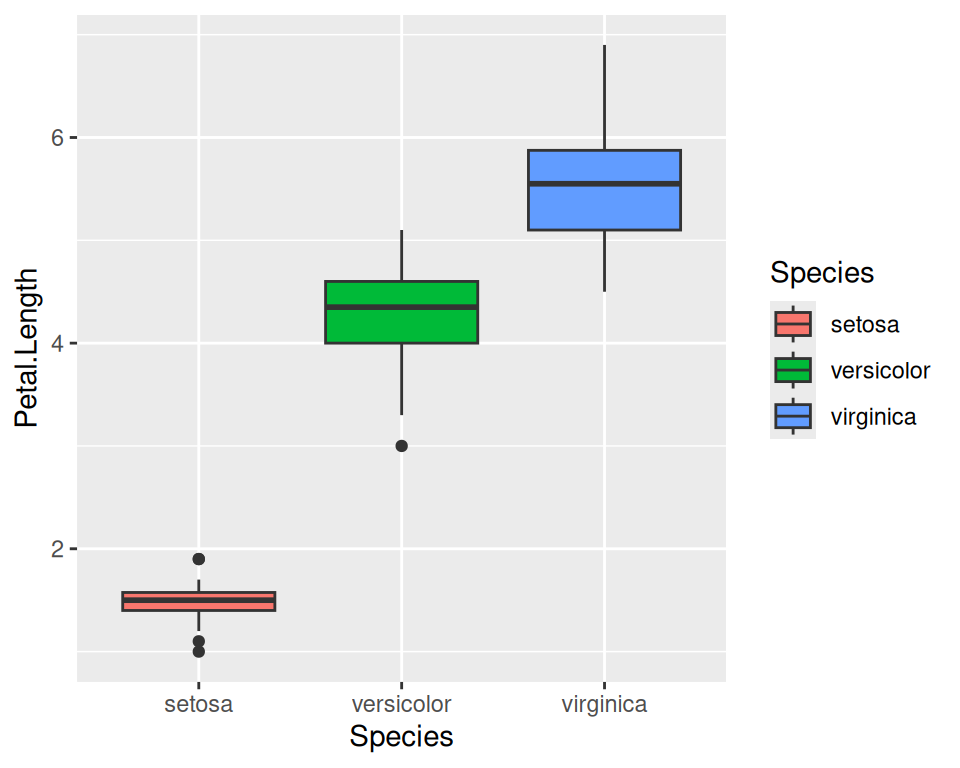
Dentro de aes() definimos para x la variable discreta “Species” y para y la variable continua “Petal.Length”. La incorporación del argumento fill indica colores distintos para cada especie.
Para jugar: Cambie fill por col y observe los resultados.
Para configurar aspectos del eje x de un boxplot, scale_x_continuos() no servirá, porque la variable definida para x no es continua (son especies). La función adecuada es scale_x_discrete():
ggplot(data = iris, mapping = aes(x = Species, y = Petal.Length, fill = Species)) +
geom_boxplot(width = 0.3, staplewidth = 0.3) +
scale_x_discrete(name = "Especie", labels = c(expression(italic("I. setosa")),
expression(italic("I. versicolor")),
expression(italic("I. virginica")))) +
scale_y_continuous(name = "Longitud del pétalo") +
theme_classic() +
theme(legend.position = "none", aspect.ratio = 1)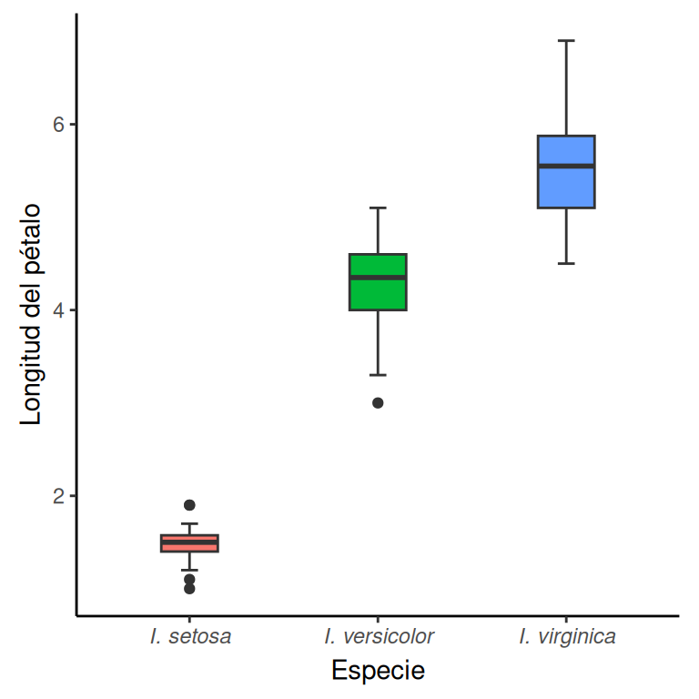
Para observar: Vea también los otros cambios incorporados al gráfico y asocie esos cambios con cada línea de código.
La función geom_jitter() permite agregar una nube de puntos, las observaciones, pero dispuestas de manera aleatoria a lo largo de uno o ambos ejes:
ggplot(data = iris, mapping = aes(x = Species, y = Petal.Length, fill = Species)) +
geom_boxplot(width = 0.3, staplewidth = 0.3, outliers = FALSE) +
geom_jitter(shape = 21, height = 0, width = 0.3, alpha = 0.4) +
scale_x_discrete(name = "Especie", labels = c(expression(italic("I. setosa")),
expression(italic("I. versicolor")),
expression(italic("I. virginica")))) +
scale_y_continuous(name = "Longitud del pétalo") +
theme_classic() +
theme(legend.position = "none", aspect.ratio = 1)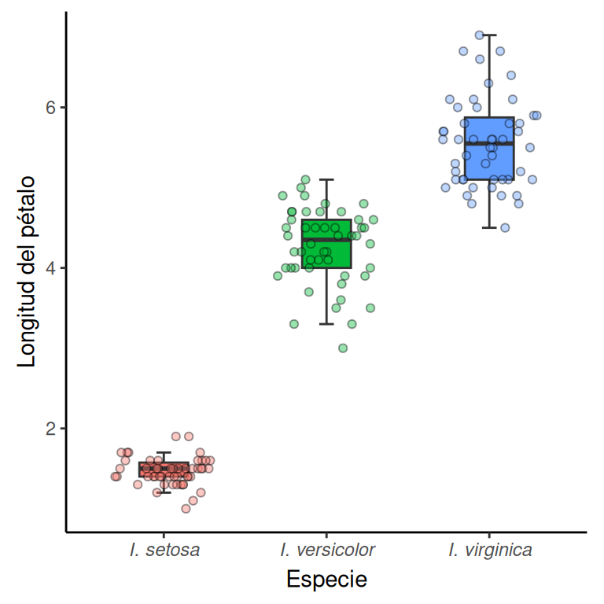
Al indicar height = 0, los puntos mantendrán la ubicación original para la variable y. En cambio, width = 0.3 reubica aleatoriamente cada punto a lo largo del eje x. El valor 0.3 simplemente indica el nivel de ruido, en este caso horizontal, que tendrá cada punto.
Ejercicio 1
Genere un gráfico idéntico al último expuesto, pero con un orden distinto para los niveles del eje x. El orden debe ser, de izquierda a derecha, I. virginica, I. versicolor e I. setosa. Para ello, debe redefinir la variable “Species” de la tabla como un factor con niveles en el orden indicado. Si no se acuerda como hacerlo, vuelva a la clase de Vectores.
Funciones de tipo theme
Las funciones que inician con theme permiten la personalización general del gráfico. Por un lado, contamos con funciones como theme_light(), las cuales vienen asociadas con configuraciones gráficas preestablecidas. Por otro lado, la función theme() permite un grado de personalización del gráfico muy alta. Por ejemplo:
ggplot(data = iris, mapping = aes(x = Sepal.Length, y = Petal.Length, color = Species)) +
geom_point(size = 3, alpha = 0.5) +
ggtitle("Scatterplot de ejemplo") +
scale_x_continuous(name = "Longitud del sépalo") +
scale_y_continuous(name = "Longitud del pétalo") +
scale_color_manual(name = NULL,
labels = c(expression(italic("I. setosa")),
expression(italic("I. versicolor")),
expression(italic("I. virginica"))),
values = c("forestgreen", "firebrick", "blue3")) +
annotate("text", x = 4, y = 6.5, label = "p < 0.05", hjust = 0) +
theme_light() +
theme(aspect.ratio = 9/16, legend.position = "bottom")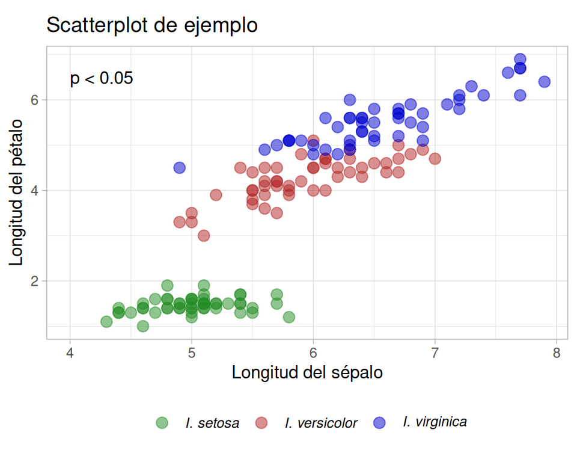
Un primer aspecto a considerar es el orden de las nuevas capas añadidas. Notar que primero se agregó theme_light(), luego theme(). Esto es importante porque, de haberlo hecho al revés, las personalizaciones hechas en theme() hubieran sido reemplazadas por la configuración preestablecida de theme_light().
Dentro de theme(), es posible indicar una gran cantidad de argumentos (ver ?theme). Entre ellos, el argumento aspect.ratio es muy útil, ya que permite establecer la relación de aspecto de la figura. Asimismo, con legend.position = "bottom" se indica que la leyenda se ubique en la parte baja de la figura.
Vale la pena mencionar la nueva capa añadida mediante annotate(), la cual sirve para añadir información al gráfico de manera directa (sin necesidad de referencias a un dataset). En el ejemplo, se utilizó para agregar texto, pero también sirve para agregar líneas o segmentos, entre otros.
Para observar: Además de lo ya explicado, ¿qué otras cosas cambiaron en el último gráfico respecto del anterior? ¿Qué líneas de código son las responsables de ello?
Para jugar: Cambie theme_light() por otras funciones del tipo con otras configuraciones preestablecida y observe los distintos resultados.
Ejemplo de caso típico: gráficos de barras con error
Un gráfico muy popular es el gráfico de barras con error asociado. Usualmente, la barra indica un valor promedio y la barra de error el error estándar o la desviación estándar. ¿Cómo haríamos este gráfico en ggplot2? Primero, es necesario generar un data.frame con los valores promedio y de error asociados (en este ejemplo, la desviación estándar). Lo haremos para cada especie del género Iris:
iris_agg1 <- aggregate(Petal.Width ~ Species, data = iris, mean)
colnames(iris_agg1)[2] <- "Petal.Width.mean"
iris_agg2 <- aggregate(Petal.Width ~ Species, data = iris, sd)
colnames(iris_agg2)[2] <- "Petal.Width.sd"
iris_agg_3 <- merge(iris_agg1, iris_agg2, by = "Species")
iris_agg_3 Species Petal.Width.mean Petal.Width.sd
1 setosa 0.246 0.1053856
2 versicolor 1.326 0.1977527
3 virginica 2.026 0.2746501Luego, la función adecuada para generar la barra es geom_col(), mientras que para la barra de error utilizamos geom_errorbar:
ggplot(data = iris_agg_3, aes(x = Species)) +
geom_col(aes(y = Petal.Width.mean)) +
geom_errorbar(aes(ymin = Petal.Width.mean - Petal.Width.sd,
ymax = Petal.Width.mean + Petal.Width.sd),
width = 0.3)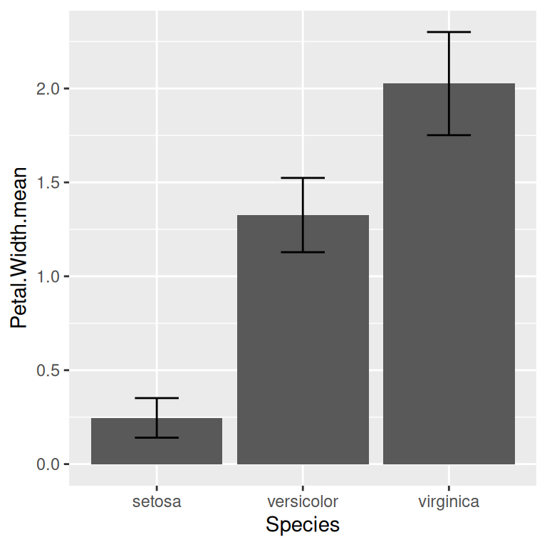
Este ejemplo también sirve para mostrar cómo podemos distribuir variables indicadas en aes(), no sólamente en el inicio del gráfico con la función ggplot(), sino también en particular sobre las nuevas capas gráficas añadidas. En este ejemplo, la variable x es la misma para todas las capas (la barra y la barra de error), por lo que se la indica en la función principal, y dicha variable vale para todos las capas subsiguientes del gráfico. Luego, para geom_col(), indicamos la variable y asociada al promedio calculado. Finalmente, definimos máximos y mínimos de la barra de error dentro de aes() de geom_errorbar(), con los argumentos específicos ymin y ymax.
Asignación de gráficos a objetos
Los gráficos de ggplot2 pueden asignarse a objetos. La ventaja de ello es que el nuevo objeto creado queda guardado en el entorno, y el gráfico puede personalizarse en el futuro haciendo referencia al objeto creado.
plot1 <- ggplot(iris, aes(x = Petal.Width))Aquí, al objeto plot1 le es asignado a un gráfico que aún no posee capas gráficas, pero sí posee una tabla asociada y una variable x asociada a una columna de esa tabla. Podemos hacer uso del nuevo objeto y el operador + para añadir nuevas capas y personalizaciones al gráfico:
plot1 <- plot1 +
geom_histogram() +
theme_bw()El gráfico puede ser mostrado en el panel simplemente llamando al objeto:
plot1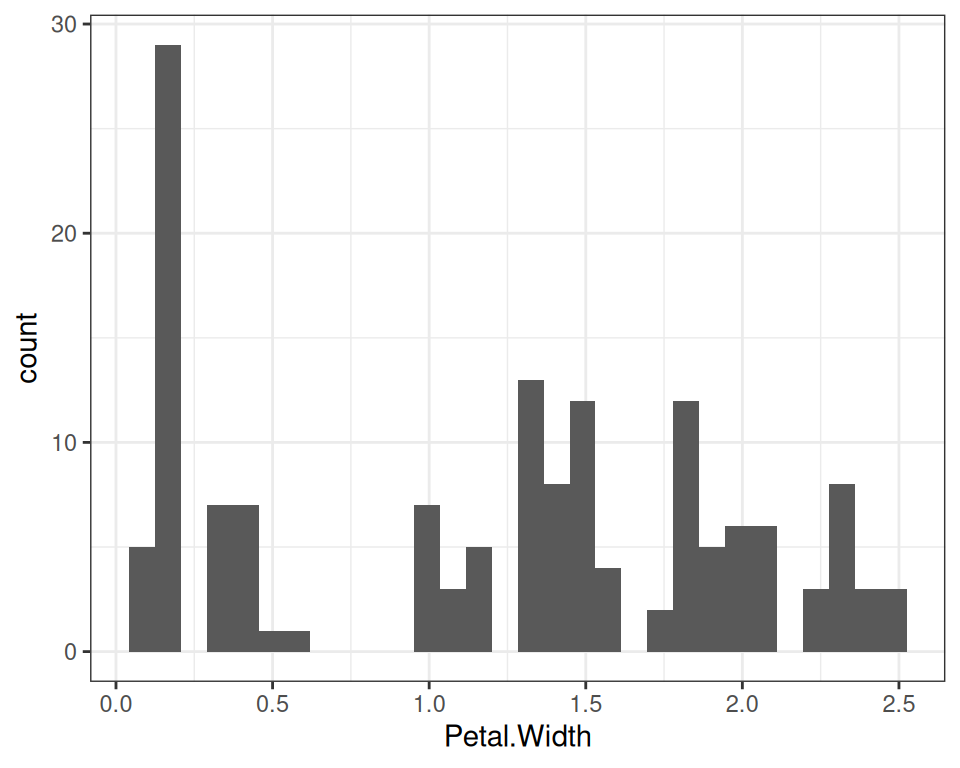
En ggplot2, los histogramas son generados mediante la función geom_histogram().
Una de las ventajas de asignar gráficos a objetos es que, una vez creado el objeto, es posible trabajar en otras tareas asociadas para obtener alguna información relevante, que será luego utilizada para continuar personalizando el gráfico.
Una situación común del flujo de trabajo de nuestras investigaciones consiste en generar un panel de gráficos de manera automática, sin recurrir a software externos a R. Por ejemplo, además del objeto plot1, creemos otros tres gráficos similares pero con otras variables:
plot2 <- ggplot(iris, aes(x = Petal.Length)) +
geom_histogram() +
theme_bw()
plot3 <- ggplot(iris, aes(x = Sepal.Width)) +
geom_histogram() +
theme_bw()
plot4 <- ggplot(iris, aes(x = Sepal.Length)) +
geom_histogram() +
theme_bw()Para crear un panel con ggplot2, la función par() utilizada para gráficos nativos de R no nos servirá. Existen otras funciones asociadas que permiten hacerlo, entre ellas, la función ggarrange() del paquete egg:
library(egg)
ggarrange(plot1, plot2, plot3, plot4, ncol = 2, nrow = 2)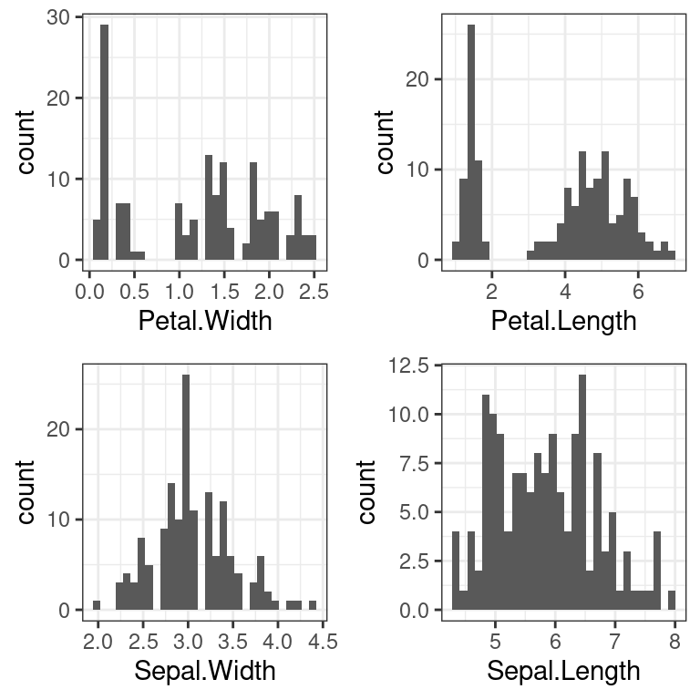
Simplemente se indican los objetos asociados a los gráficos, junto con la cantidad de columnas y filas, como si fuera una matriz con espacios vacíos a ser rellenados por cada gráfico (aquí, una matriz de 2x2).
La función ggarrange() del paquete egg es una de muchas formas de generar paneles con gráficos de ggplot2. También podemos mencionar a la función plot_grid() del paquete cowplot y a grid.arrange() del paquete gridExtra.
Exportación de gráficos
Existen varias formas de exportar los gráficos de ggplot2. Una de ellas es a través de la interfaz gráfica de RStudio, en el panel de gráficos. Otra opción es encerrar el bloque de código de la siguiente manera, y correr todo el bloque a la vez, bloque de código que también es válido para gráficos en R base:
png(filename = "dia4/scatterplot.png", width = 1200, height = 1000, res = 300)
ggplot(data = iris, mapping = aes(x = Sepal.Length, y = Petal.Length, color = Species)) +
geom_point(size = 3, alpha = 0.5) +
geom_smooth(method = "lm") +
ggtitle("Scatterplot de ejemplo") +
scale_x_continuous(name = "Longitud del sépalo") +
scale_y_continuous(name = "Longitud del pétalo") +
scale_color_manual(name = "Especie",
labels = c("I. setosa", "I. versicolor", "I. virginica"),
values = c("forestgreen", "firebrick", "blue3"))
dev.off()Como podemos observar, entre otros argumentos, es posible indicar el ancho, largo y la resolución (en ppi). Otras alternativas a png() son jpeg() y tiff().
Otra alternativa es utilizar la función ggsave(), por ejemplo:
ggsave(filename = "dia4/scatterplot.png", dpi = 600, units = "px")Al no especificar qué gráfico exportar, se exporta el último gráfico devuelto en el panel de gráficos. De lo contrario, es posible indicar explícitamente qué gráfico exportar:
plot5 <- ggplot(data = iris, mapping = aes(x = Sepal.Length, y = Petal.Length, color = Species)) +
geom_point(size = 3, alpha = 0.5) +
geom_smooth(method = "lm") +
ggtitle("Scatterplot de ejemplo") +
scale_x_continuous(name = "Longitud del sépalo") +
scale_y_continuous(name = "Longitud del pétalo") +
scale_color_manual(name = "Especie",
labels = c("I. setosa", "I. versicolor", "I. virginica"),
values = c("forestgreen", "firebrick", "blue3")) +
theme(aspect.ratio = 3/4)
ggsave(filename = "scatterplot.png", plot = plot5, dpi = 600, units = "px")Ejercicios
El dataset Indometh contiene los datos de concentración en sangre de una droga en función del tiempo para 6 sujetos (para mayor información sobre el dataset, explore la ayuda con ?Indometh). Antes que nada, explore el dataset, su estructura y tipo de dato.
- Genere un gráfico de líneas que relacione la concentración de la droga en sangre en función del tiempo, pero diferencie las tendencias entre sujetos con colores diferentes de líneas. Incremente el grosor de cada línea lo que considere suficiente. Indique el título “(a)” para el gráfico. Coloque nombres, en español, a los ejes y a la leyenda. Inserte una línea vertical discontinua pasando por el valor
x = 1. Establezca la relación de aspecto en 9/16.
Los niveles de la columna “Subject” están desordenados. ¿Por qué? Arreglar eso!
Genere un gráfico relacionando las mismas variables que el anterior, pero haciendo un zoom a una región particular del gráfico. Para ello, el código será casi idéntico al gráfico anterior, pero además deberá utilizar la función
coord_fixed(), en donde deberá indicar la región del gráfico de interés (explore ?coord_fixed sobre cómo hacer esto). La región donde hará zoom será la de mayor variación de cambio entre la concentración de la droga en sangre y el tiempo. Indique el título “(b)” para el gráfico.Genere un panel con los gráficos anteriores, a la izquierda el gráfico del punto 1 y a la derecha el del punto 2. El panel, al estar compuesto por gráficos individuales, posiblemente contenga información redundante: el nombre para el eje vertical y la leyenda (está repetida). No es necesario repetir la información. Arreglar eso!
Exporte el panel gráfico con una resolución de 300 ppi dentro de la carpeta “dia4” del proyecto del curso. Para ello, explore
?png.